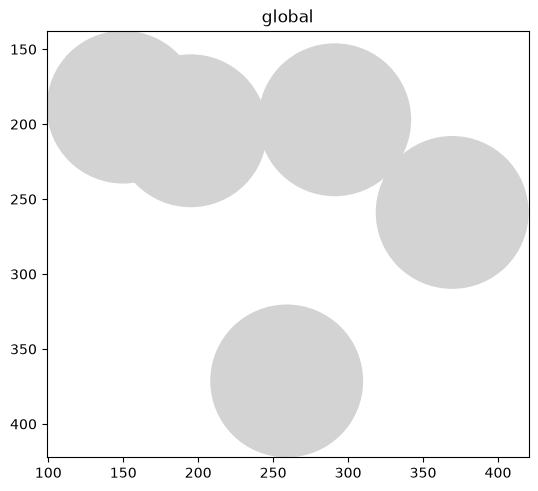
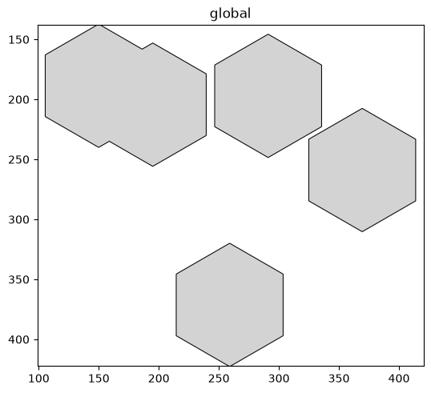
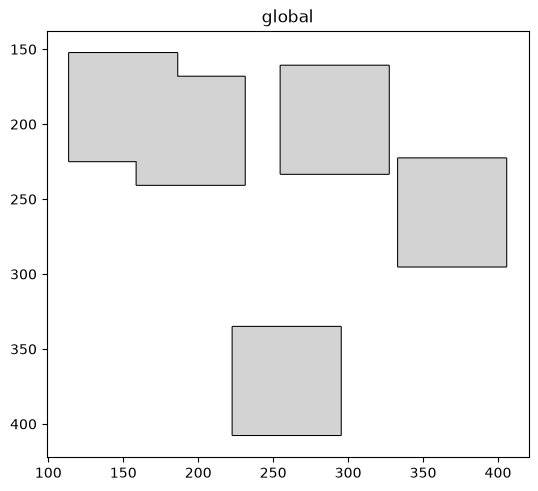
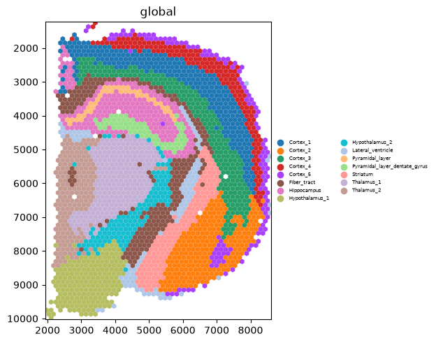
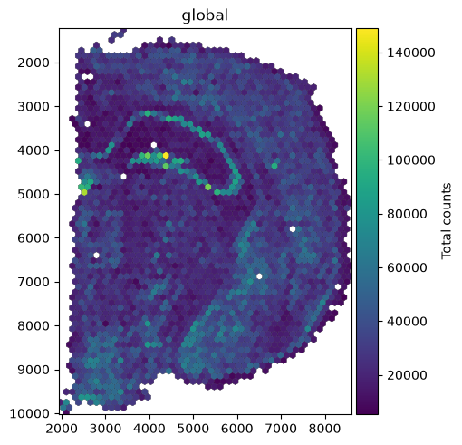

Marker shapes for circle elements in spatialdata-plot#
render_shapes stores circle elements as a centre point plus a radius (Visium spots, blobs_circles).
The shape= argument controls the marker each is drawn with — a circle, a hexagon, a square, or a
Visium-style hexagon — without changing the underlying geometry. By the end you should be able to:
Draw circle elements as circles, hexagons, or squares with
shape=.Render Visium spots as a hex grid with
shape="visium_hex".Combine
shape=with colouring and outlines.
We use the synthetic blobs dataset for the basic shapes and the real 10x Visium mouse-brain
dataset from squidpy for the Visium hexagons, both cached on first use.
Setup#
import spatialdata as sd
import squidpy as sq
import spatialdata_plot # noqa: F401 # registers the .pl accessor
sdata = sd.datasets.blobs()
sdata
SpatialData object
├── Images
│ ├── 'blobs_image': DataArray[cyx] (3, 512, 512)
│ └── 'blobs_multiscale_image': DataTree[cyx] (3, 512, 512), (3, 256, 256), (3, 128, 128)
├── Labels
│ ├── 'blobs_labels': DataArray[yx] (512, 512)
│ └── 'blobs_multiscale_labels': DataTree[yx] (512, 512), (256, 256), (128, 128)
├── Points
│ └── 'blobs_points': DataFrame with shape: (<Delayed>, 4) (2D points)
├── Shapes
│ ├── 'blobs_circles': GeoDataFrame shape: (5, 2) (2D shapes)
│ ├── 'blobs_multipolygons': GeoDataFrame shape: (2, 1) (2D shapes)
│ └── 'blobs_polygons': GeoDataFrame shape: (5, 1) (2D shapes)
└── Tables
└── 'table': AnnData (26, 3)
with coordinate systems:
▸ 'global', with elements:
blobs_image (Images), blobs_multiscale_image (Images), blobs_labels (Labels), blobs_multiscale_labels (Labels), blobs_points (Points), blobs_circles (Shapes), blobs_multipolygons (Shapes), blobs_polygons (Shapes)
1. The default — circles#
The default is shape=None, which renders each element as its stored geometry — circles here.
Passing shape="circle" is equivalent for circle elements.
sdata.pl.render_shapes("blobs_circles").pl.show()

2. Hexagons and squares — shape=#
shape="hex" and shape="square" redraw the same circles as hexagons or squares, sized to the
radius. Handy when a tiling look reads better than overlapping discs.
for shape in ["hex", "square"]:
sdata.pl.render_shapes("blobs_circles", shape=shape, outline=True).pl.show()


3. Visium spots as a hex grid — shape="visium_hex"#
Visium spots sit on a hexagonal grid, and are often drawn as touching hexagons rather than dots.
shape="visium_hex" does exactly that. We switch to the real Visium mouse-brain section and colour by
its brain-region clusters.
We switch datasets because the synthetic blobs_circles are not a real hexagonal grid. The element
name ("spots") and the columns ("cluster", "total_counts") below are specific to this dataset —
inspect sdata.shapes and the annotating table’s columns to find the equivalents in your own data.
visium = sq.datasets.visium_hne_sdata()
visium.pl.render_shapes(
"spots", shape="visium_hex", color="cluster"
).pl.show(legend_loc="right margin", legend_fontsize=5)
INFO Loading existing dataset from data/spatialdata/visium_hne_sdata.zarr

4. Combining shape= with colour and outline#
shape= composes with the usual styling — colour by a column, add an outline, set fill_alpha (see
the Styling shapes and labels tutorial).
(See the Legends and colorbars example for legend_loc and colorbar_params.)
visium.pl.render_shapes(
"spots", shape="visium_hex", color="total_counts",
outline=True, outline_width=0.3, outline_color="black",
).pl.show(colorbar_params={"label": "Total counts"})

Summary#
Circle elements (Visium spots,
blobs_circles) carry a centre and radius;shape=chooses the marker they are drawn with, leaving the geometry unchanged.shape=acceptsNone(the default, render as-is),"circle","hex","square", and"visium_hex"; this tutorial uses circle elements (centre + radius), whichshape=is designed for.shape="visium_hex"renders Visium spots as a touching hex grid — the familiar Visium look.shape=composes with colour, outline, and the other styling arguments.
For reproducibility#
# ruff: noqa: F401, F811, I001, E402
# fmt: off
import warnings
import spatialdata_plot
%load_ext watermark
# fmt: on
%watermark -v -m -p spatialdata,spatialdata_plot,squidpy,matplotlib,numpy
Python implementation: CPython
Python version : 3.14.6
IPython version : 9.14.1
spatialdata : 0.7.3
spatialdata_plot: 0.4.1
squidpy : 1.8.2
matplotlib : 3.11.0
numpy : 2.4.6
Compiler : Clang 20.1.8
OS : Darwin
Release : 25.2.0
Machine : arm64
Processor : arm
CPU cores : 8
Architecture: 64bit